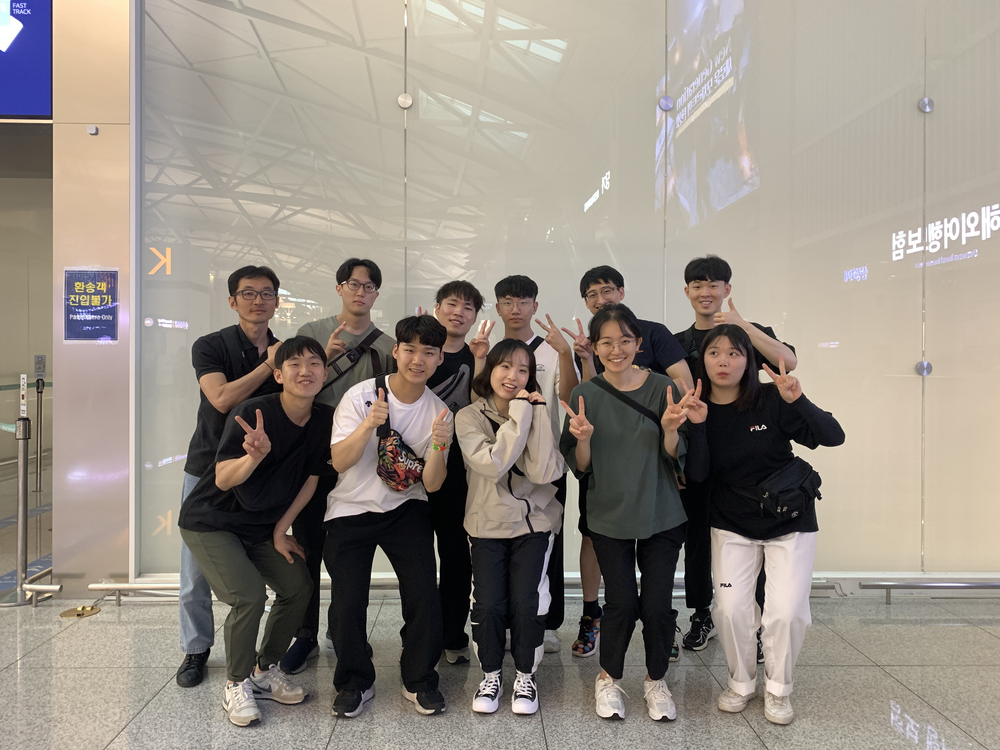
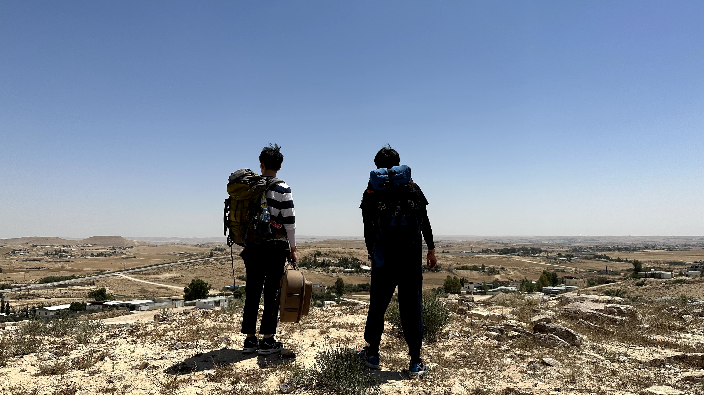
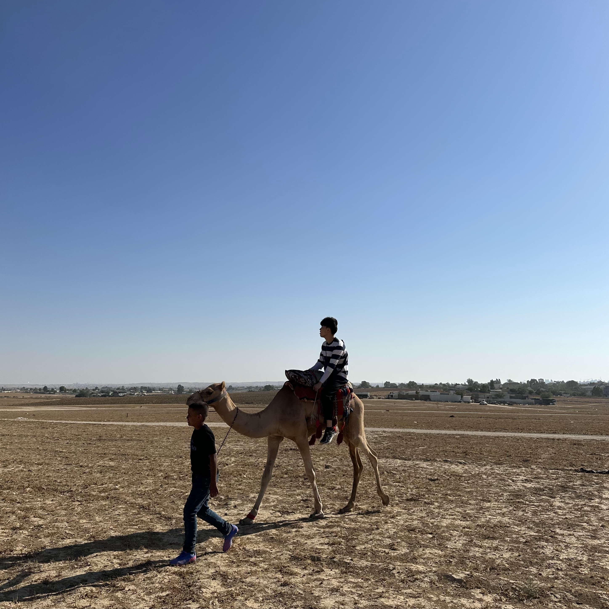
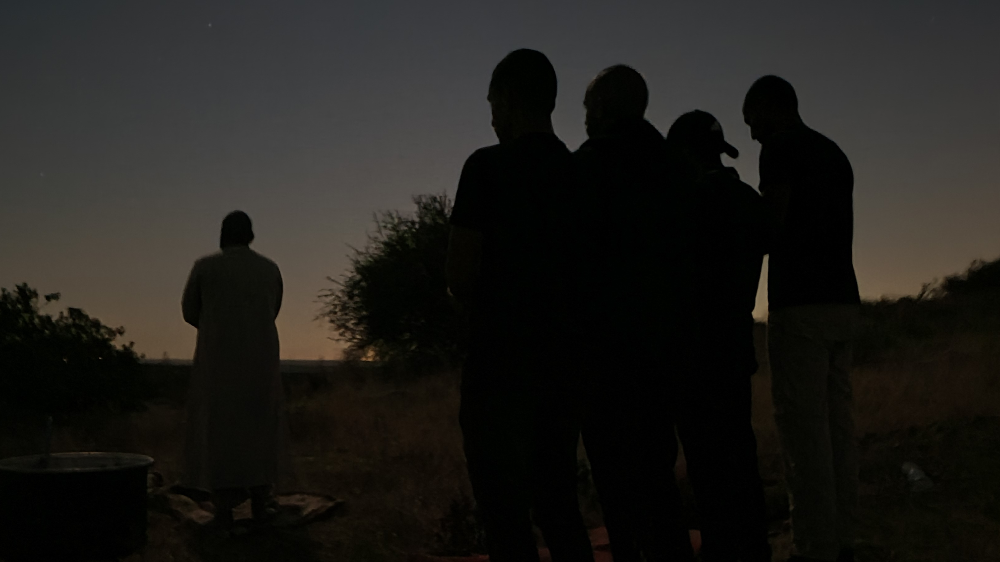
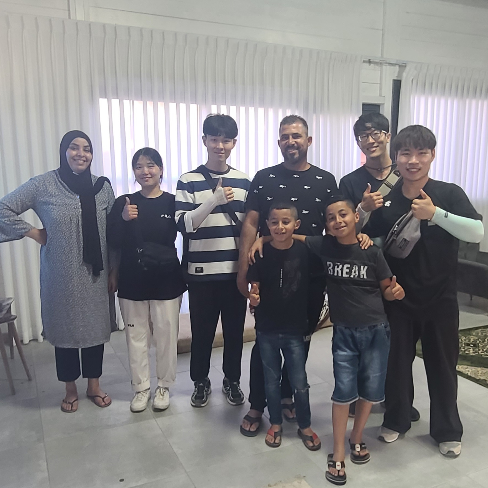
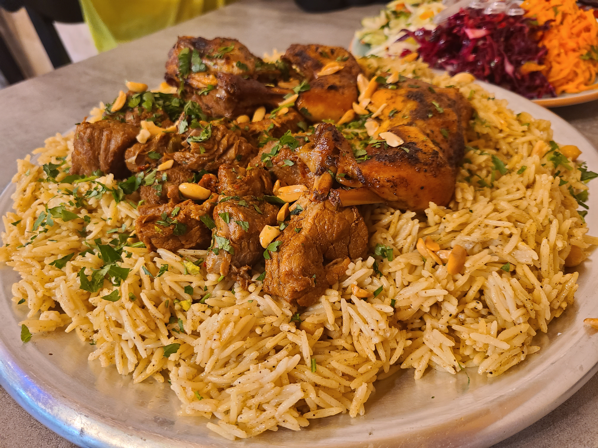
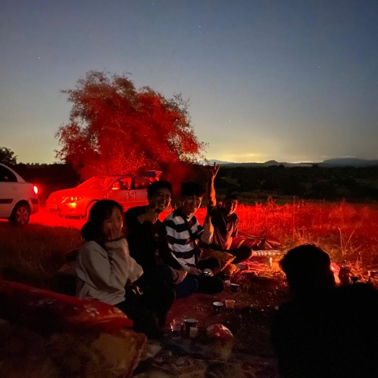
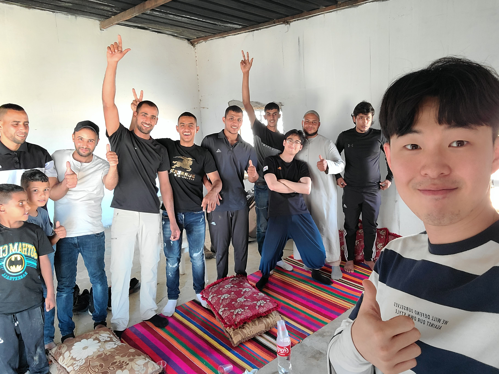
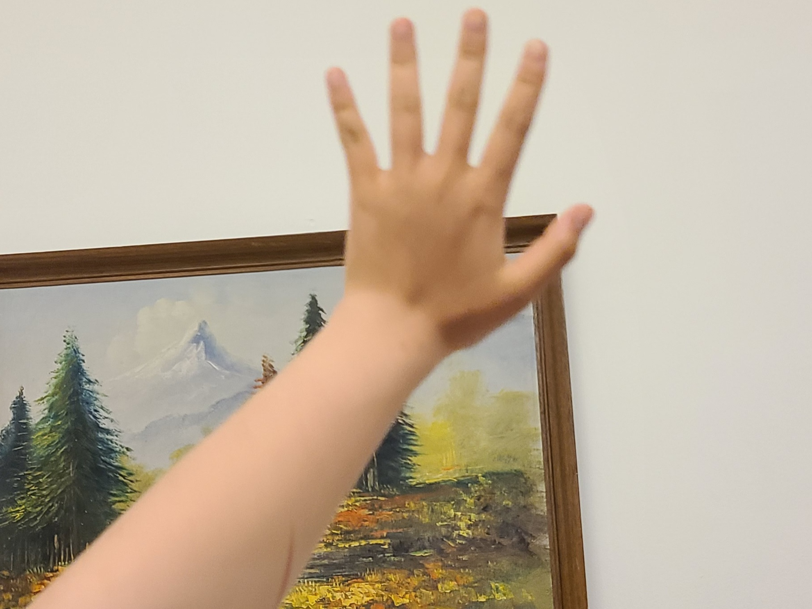
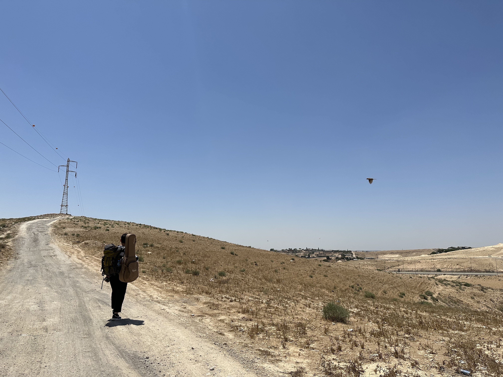

앗살라무 알라이쿰!
"하나님의 평화가 당신에게 있기를". 현장에서 하루에도 수백 번씩 사용한 인사표현입니다. 참 좋은 인사표현이죠. 진정한 평화 되신 예수님과 동행함으로 오늘도 주님 안에서 샬롬을 누리시기를 소망합니다.

<사역시작 전 공항에서>
저는 중보자님께서 기도해 주신 덕분에 주님의 은혜 안에서 사역을 잘 감당하고 한국에 돌아왔습니다. 아직 시차 적응을 하고 있지만, 아픈 곳도 없고 주님께서 주시는 기쁨이 마음에 가득합니다. 마을 곳곳을 돌아다니고, 광야와 사막을 지나며 많은 영혼에게 예수그리스도 이름의 능력을, 복음을 증거하고 왔습니다. 예수님의 이름을 증거할수록 그 이름의 능력이 얼마나 소중한지 체감하게 되어 감사할 뿐입니다. 열방 가운데 예수그리스도의 이름을 선포할 수 있도록 기도와 후원으로 이 여정을 함께해 주셔서 진심으로 감사드립니다.

<팀원과 어느곳으로 갈지 고민하는 중>
이번에는 이스라엘 남부 네게브 지역에 있는 베두인 민족에게 나아갔습니다. 베두인 민족이 자신들을 소개한 이야기들을 짧게 나누면, 1948년 이스라엘이 이 땅에 독립하기 이전부터 이들은 오랫동안, 이 땅에서 민족 정체성을 유지해 왔습니다. 수많은 강대국이 이 지역을 점령했었지만, 베두인 민족은 사람들이 살기 힘든 광야와 사막 지대에 살았기에, 제국들의 간섭을 받지 않고 오랜 삶의 양식과 그들만의 문화를 이어갈 수 있었습니다. 하지만 이스라엘이 1948년에 독립하고 네게브 광야지대에 있는 자원을 얻기 위해서 베두인 민족을 광야에서 내쫒아야 하는 상황이 도래했습니다. 그래서 이스라엘은 네게브 지역에 몇몇 허가 마을을 건설하며 베두인 사람들을 그곳에 강제 이주하는 정책을 시행했습니다. 광야를 자신의 집 삼아, 하늘을 지붕 삼아 살던 베두인 사람들에겐 너무나 가혹한 정책이었습니다. 허가 마을 이외에 사는 베두인들은 이스라엘에게 강제로 집을 철거 당하기에, 많은 베두인 사람들은 허가 마을로 이주했습니다. 그러나 몇몇 베두인들은 여전히 비허가지역에 거주하고 있습니다. 수백 년, 수천 년간 살아온 그들의 삶과 땅에 대한 권리를 주장하며 여전히 광야에서 그 삶에 대한 자부심을 지키고 있습니다. 비록 이스라엘이 계속해서 비허가 마을과 집을 부수고 있지만, 그럼에도 동물들을 다스리는 광야의 삶을 지키고 있는 것입니다.

<현지인이 기르는 낙타를 타며>
베두인 사람들을 만나며 평생 만날 동물들은 다 본 것 같습니다. 수십 마리의 낙타와 양들, 염소 그리고 말들을 매일 보았습니다. 동물들을 다스리며 "슄"이라는 개방된 공간에서 자연을 누리며 살아가는 베두인의 모습은, 자연과 만물을 다스리시는 하나님의 형상과 닮아 있는듯 합니다. 마초적인 매력을 지니고 있는 이들과 함께 광야에서 며칠간 씻지 않고 생활하기도 하며 그들의 문화를 함께 즐기며 교제합니다. 환경이 어렵다고 느껴질 만도 하지만, 이들을 사랑하시는 하나님의 마음이 부어져서인지, 그들과 함께하는 것이 얼마나 즐거운지 모릅니다. 그러나 그들은 하나님 영광의 본체이신 예수그리스도를 알지 못해 불안함 가운데 살아갑니다. 스스로의 선행으로 구원을 얻을 수 있다고 말하지만, 자신의 연약함을 알기에, 그 누구도 구원의 확신 없이 두려움 가운데 살아갑니다.

<하루 5번의 기도 중 한번, 놀다가 갑자기>
정말 신기하게도 우리가 사역하는 그 기간에 이슬람 최대 명절인 "이드 알 하드하"가 열렸습니다. 아브라함의 아들(그들은 이삭이 아니라 이스마엘이라고 이야기합니다), 이삭이 죽어야 했지만 어린 양이 대신 죽은 사건을 기념하여 모든 집에서 양을 직접 잡습니다. 덕분에 양도 많이 먹을 수 있었고, 어린양이신 예수그리스도를 더 담대히 증거할 수 있었습니다. 아브라함의 아들이 죽어야 했지만, 그 대신에 준비된 어린양이 죽은 것처럼, 죄 때문에 우리는 죽어야 하지만 예수님이 우리 죄를 대신해서 십자가에서 죽어주셨기에 우리가 영생을 얻을 수 있음을 나누었습니다. 몇몇 사람들은 반박하기도 했지만, 몇몇 사람들은 저희의 말을 귀 기울이고 끄덕이기도 했습니다. 무슬림 사회이기에 당장 영접하지는 못했지만, 수많은 이들에게 심겨진 복음의 씨앗이 끝내 자라서 열매 맺을 것을 믿습니다.

<어느 A 형제의 가정에서>
어느 날은 여행을 좋아하는 부유한 A 형제가 저희에게 물었습니다. "너희들은 어떻게 계획도 없이 여행을 할 수 있어? 낯선 곳인데 두렵지 않아? 나는 그렇게 여행하는 것을 상상할 수 없어". 특별히 이날, 팀원들과 요한복음을 묵상하며 하나님이 어떤 분이신지를 담대히 증거 할 것을 나누었기에, 다음과 같이 답할 수 있었습니다. "우리는 아침마다 예수님의 이름으로 기도해. 그 이름으로 기도하면, 언제나 하나님이 우리의 기도를 응답해 주시고, 하루를 동행해 주시며 가까이서 지켜주셔. 우리를 지켜주시는 예수님의 사랑이 있기에 두렵지 않고 매일 기쁘고 즐거워. 너를 오늘 만나게 하신 것도, 그 사랑을 증거하게 하신것도 하나님이야". 이 말을 들은 A 형제와 그 아내는 우리들의 믿음이 놀랍다고 이야기하며 끝까지 복음을 들어주었습니다. 무슬림의 정체성을 아직 놓지는 못하지만, 이들 가운데 선포된 예수그리스도의 이름이 이들의 입술을 통해 높인 받게 될 것을 믿습니다.

<만사프, 양과 닭고기가 올라간 볶음밥, 거의 매일 먹음>
예수그리스도의 이름을 증거하며, 그 이름이 얼마나 영광스러운지를 오히려 제가 더 보게 됩니다. 무슬림들은 매일 5번 `알라`에게 기도하지만, 하나님의 사랑을 모르고, 그분과의 인격적인 관계가 전혀 없습니다. 그들에게 하나님이 어떤 분이신지 물으면, 너무나 당황해하면서 자신을 창조한 분, 위대한 분, 그러한 종교적인 대답 이외에는 이야기를 하지 못합니다. 하나님과 개인적인 관계를 맺는다는 개념조차 없음을 느끼며, 새삼 우리에게 주어진 예수그리스도의 이름이 얼마나 놀라운지 보게됩니다. 그 이름 때문에 나는 하나님께 기도하며 그분의 응답을 느낄 수 있고, 그 이름 때문에 하나님의 사랑을 매일 기쁨으로 경험하며, 그 이름 때문에 항상 하나님과 동행할 수 있으며, 그 이름 때문에 영원한 하나님 나라의 소망을 품을 수 있음이 얼마나 감사한지 모릅니다.

<현지인 친구들과 캠프파이어를 하며>
베두인 민족을 창조하시고, 이름을 주시고, 그분의 형상을 남겨두신 하나님께서 복음을 증거하는 주님의 제자들을 통해서 그 민족을 회복게 하실 것입니다. 아직은 미약해 보이지만, 주님께서 이들을, 창조하고 계획하신 아름다운 주님의 자녀 된 형상으로 다시 빚으실 것입니다. 어두웠던 조선 땅 가운데 심겨진 복음이 지금의 한국교회를 잉태했듯이, 열방 가운데, 베두인 민족 가운데 하나님의 나라가 끝내 임하게 될 줄 믿습니다. 이 여정 가운데 기도와 후원으로 함께 해주신 모든 분께 정말 감사드립니다. 직접 찾아뵙지 못하고 글로 소식을 전하게 되어 죄송한 마음이 있지만, 그럼에도 함께해 주셔서 또한 감사한 마음입니다. 23년 여름 단기사역은 이렇게 끝났지만, 이들에게 심겨진 복음이 열매 맺을 수 있도록 계속해서 함께 기도해 주세요. 우리의 기도를 통해서 하나님의 나라가 속히 임하게 될 것을 믿습니다. 함께해 주신 모든 분께 다시 한번 감사의 말씀 드립니다. 슈크란! (감사합니다!)

<우리를 너무나 좋아해주는 친구들>
1. 베두인 민족과 열방 가운데 예수그리스도의 이름이 높임 받을 수 있도록
2. 선교사로서 준비되기 위해 믿음의 훈련을 받는 과정인데, 타협하지 않고 주님만을 따르는 깨끗한 통로가 될 수 있도록

<사역 일주일 지난 후, 한 팀원의 성능좋은 팔토시>
*이번 8월 9-12일 비전선교단 선교캠프가 경기도 광주에서 진행됩니다. 하나님의 비전이 나의 비전이 되게 하는 귀한 은혜의 시간입니다. 하나님에 대해서, 비전에 대해서 더 알길 원하시는 분들은 저에게 말씀해 주시면 보다 자세히 선교캠프에 대해 안내해 드리도록 하겠습니다(학생, 직장인, 청소년, 어느 연령대라도 모두 환영합니다)
*기도편지에 있는 사진을 저장 또는 공유하지 않으시기를 부탁드립니다. 보안을 위해 해당 편지는 일정 시간이 지난 후에 내리려 합니다.
* 혹시 기도제목이 있으시다면 언제든지 편하게 나눠주세요. 작게나마 함께 기도하기 원합니다. (연락처 010-9674-7290)

<광야에서 그늘을 찾는 중>